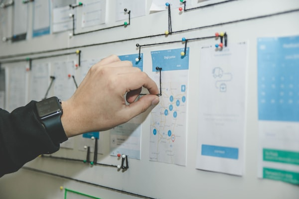

Hey, I'm
A product manager who works across
|
Chicago, IL · Remote
Connect on LinkedIn →I've spent the last 5 years in product management, mostly in B2B SaaS — working on platforms, integrations, and security products at companies like Cisco, Ford, and Volkswagen. Before that, I spent nearly a decade building web products as a full-stack developer and running a small digital agency. That technical background shapes how I approach product work: I like to get close to the problem and understand how things actually work.

Senior Product Manager
Working on FedRAMP High compliance and platform architecture for a zero-trust networking startup. Involves translating federal security frameworks into actionable engineering work and contributing to hands-on platform delivery.
Product Manager — Edge Intelligence & Industrial IoT SD-WAN
Managed edge compute and industrial IoT products across the SD-WAN portfolio. Focused on customer discovery, partner integrations, and shipping data pipeline features for industrial use cases.
Product Manager — Autonomous Vehicles & Fleet Operations
Worked on fleet operations tooling for Ford's autonomous and commercial vehicle programs. Focused on improving vehicle visibility, maintenance workflows, and analytics-driven prioritization.
Connected Services Analyst (Graduate Program)
Worked across cybersecurity and IT portfolio management for Volkswagen's connected vehicle platform and US/Canada operations.
Full-Stack Development & Digital Product Consulting
Built web products for clients as a freelance developer and co-founder of a small digital agency. Worked across WordPress, React, Vue, and Laravel.
Community-driven loadout optimizer and build planner for Deep Rock Galactic.
Visit site →Advisory platform connecting founders with experienced product and technical mentors.
Visit site →Minimalist news aggregator focused on signal over noise — no ads, no fluff.
Visit site →Educational resource breaking down autonomous vehicle technology for a general audience.
Visit site →